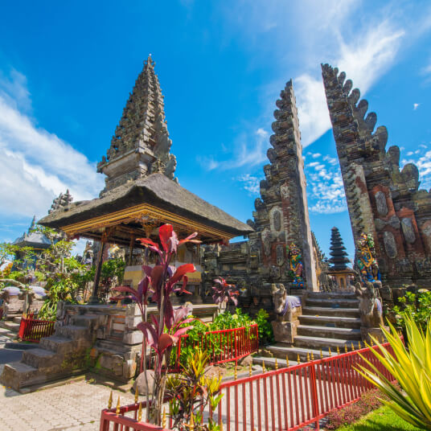

Lakefront time
Keep open time around the lakes so the city does not feel like a sequence of photo stops.
Udaipur works best when the itinerary leaves room for waterfront time, palace visits and relaxed evenings instead of packing every hour with transfers.

Udaipur suits couples, families and travellers who want a softer pace between longer Rajasthan drives.
Keep open time around the lakes so the city does not feel like a sequence of photo stops.
Group major heritage sights with nearby areas to reduce unnecessary backtracking through the city.
Plan viewpoints and sunset time deliberately rather than trying to fit them between long daytime transfers.
Longer stays are useful when Udaipur is part of a honeymoon, family holiday or a multi-city Rajasthan circuit.
A classic royal-city combination with contrasting atmospheres.
Works well when moving through southern and western Rajasthan.
A good choice for travellers who want a cooler hill stop in the same trip.
Send your dates, starting city, hotel preference and traveller count. We will help organise the route around the time you actually have.
Send Udaipur Dates